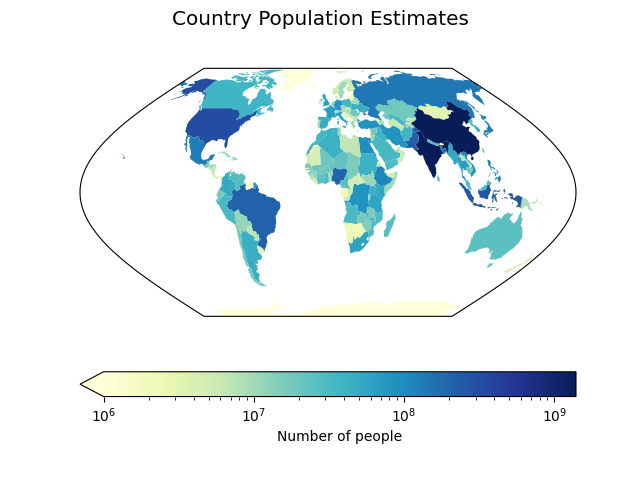

Note
Go to the end to download the full example code.
Choropleth map: associating data with geometries#
This example shows how to colour geometries based on a data array. This functionality is available since Cartopy 0.23.
/home/circleci/project/lib/cartopy/io/__init__.py:242: DownloadWarning: Downloading: https://naturalearth.s3.amazonaws.com/110m_cultural/ne_110m_admin_0_countries.zip
warnings.warn(f'Downloading: {url}', DownloadWarning)
import matplotlib.colors as mcolors
import matplotlib.pyplot as plt
import cartopy.crs as ccrs
import cartopy.io.shapereader as shpreader
def main():
# Load Natural Earth's country shapefiles.
shpfilename = shpreader.natural_earth(resolution='110m',
category='cultural',
name='admin_0_countries')
reader = shpreader.Reader(shpfilename)
countries = reader.records()
# Get hold of the geometry and population estimate from each country's record.
geometries = []
population_estimates = []
for country in countries:
geometries.append(country.geometry)
population_estimates.append(country.attributes['POP_EST'])
# Set up a figure and an axes with the Eckert VI projection.
fig = plt.figure()
ax = fig.add_subplot(projection=ccrs.EckertVI())
# Plot the geometries coloured according to population estimate.
art = ax.add_geometries(geometries, crs=ccrs.PlateCarree(),
array=population_estimates, cmap='YlGnBu',
norm=mcolors.LogNorm(vmin=1e6))
cbar = fig.colorbar(art, orientation='horizontal', extend='min')
cbar.set_label('Number of people')
fig.suptitle('Country Population Estimates', fontsize='x-large')
plt.show()
if __name__ == '__main__':
main()
Total running time of the script: (0 minutes 1.399 seconds)